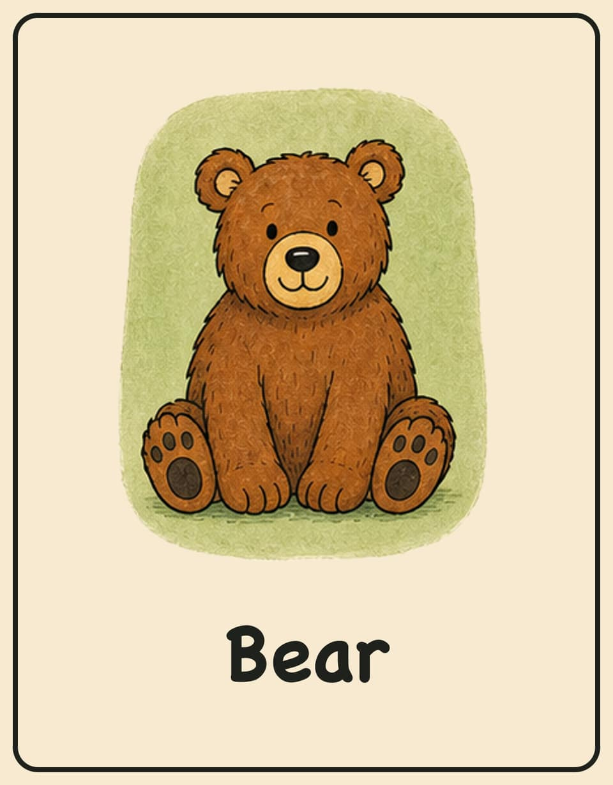
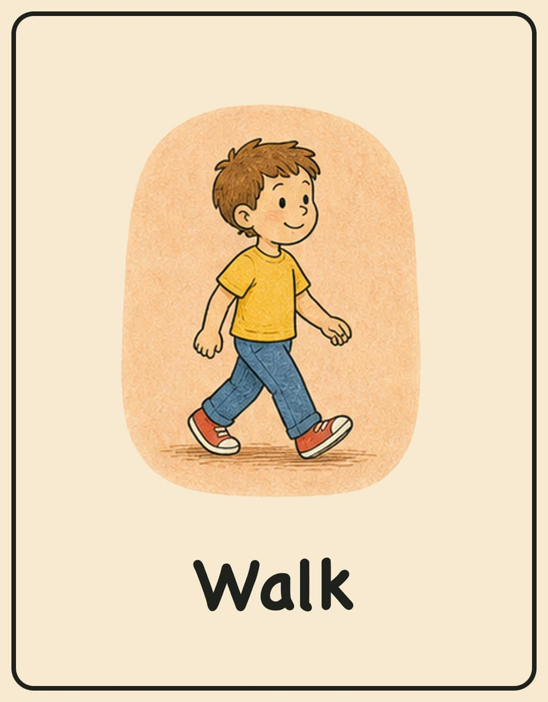
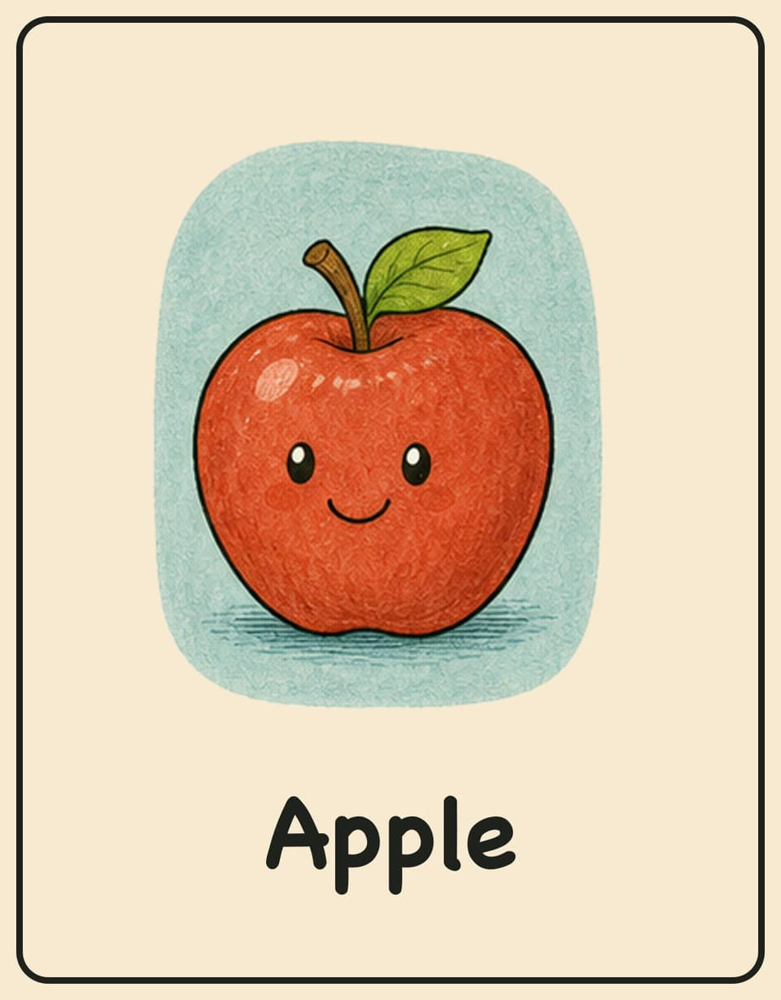

Charades for Kids
Play family-safe charades online, or download printable cards with cartoon icons for classrooms, birthday parties, and family game night.




Play Online
Download by Theme
Animals
Easy animal charades for kids ages 4-10.
Actions
Simple action charades for young players.
Food
Food-themed charades cards for family play.
Jobs
Friendly community helper and career charades.
Sports
Active sports and movement charades.
Everyday Objects
Household and school objects kids can recognize.
How to Use
Use US Letter paper at 100% scale.
Follow the dashed lines to make cards.
Act silently while others guess in 60 seconds.
What Are Charades for Kids?
Charades for kids is a simple acting and guessing game. One player picks a prompt, acts it out without speaking, and the rest of the group tries to guess the word before time runs out. It works well for young players because the rules are easy, the game uses movement, and adults can quietly help early readers.
This page includes both an online charades game and printable charades cards, so you can play from a phone or print a cut-out deck for screen-free activities.
Printable Charades Cards Included
This kids charades pack includes 144 printable cards across Animals, Actions, Food, Jobs, Sports, and Everyday Objects. Each deck is available as a separate PDF, plus one combined starter pack and a grayscale-friendly classroom version.
The prompts are designed for ages 4-10 and avoid adult, violent, scary, political, and brand-specific topics. Use the full starter pack for family game night, or download one theme at a time for a shorter classroom warm-up, birthday party game, homeschool activity, or rainy-day activity.
Best Ways to Play
For younger kids, choose Animals, Food, or Everyday Objects and let a grown-up read the card quietly. For older kids, mix all decks together and use a 60-second timer. In classrooms, print the grayscale pack to save ink and split students into small teams so more children get a turn to act.
For Teachers and Homeschool
Teachers and homeschool parents can use this free printable charades resource for classroom brain breaks, indoor recess, ESL speaking practice, vocabulary review, and movement-based learning. The educator resource page includes learning goals, usage rights, age guidance, and direct PDF links for submitting or sharing the activity as an open educational resource.
View Educator ResourceWhy This Charades Game Works
A good game of charades for kids needs prompts that children can understand quickly. The best cards use familiar words, clear actions, and simple objects, so players spend less time asking for help and more time acting, laughing, and guessing. That is why this printable set focuses on everyday themes instead of tricky movie titles, pop culture references, or jokes that only adults understand.
Use charades for kids when you need a low-prep activity that still feels active and social. Parents can print a short deck before a playdate, teachers can use one theme as a five-minute classroom brain break, and party hosts can mix the full pack for a longer group game. The online version is useful when you do not have a printer nearby, while the printable PDFs are better when you want screen-free charades for kids around a table.
Common Questions
Best for ages 4-10, with easy prompts and a few medium prompts for older kids.
Yes. Use US Letter paper and print at 100% scale for clean card cuts.
Yes. The prompts avoid adult, violent, scary, political, and brand-specific topics.